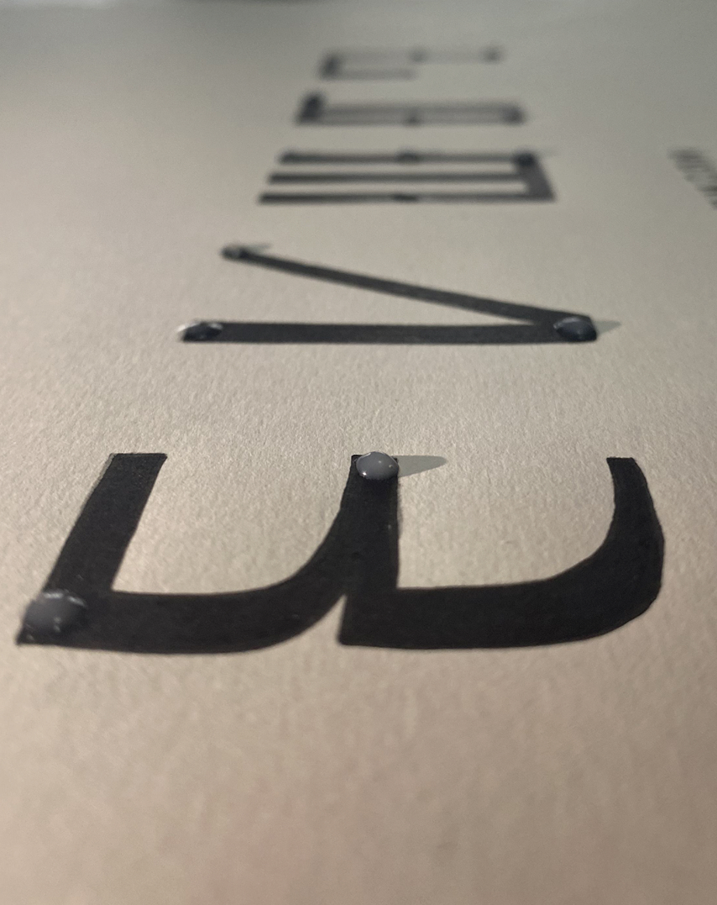
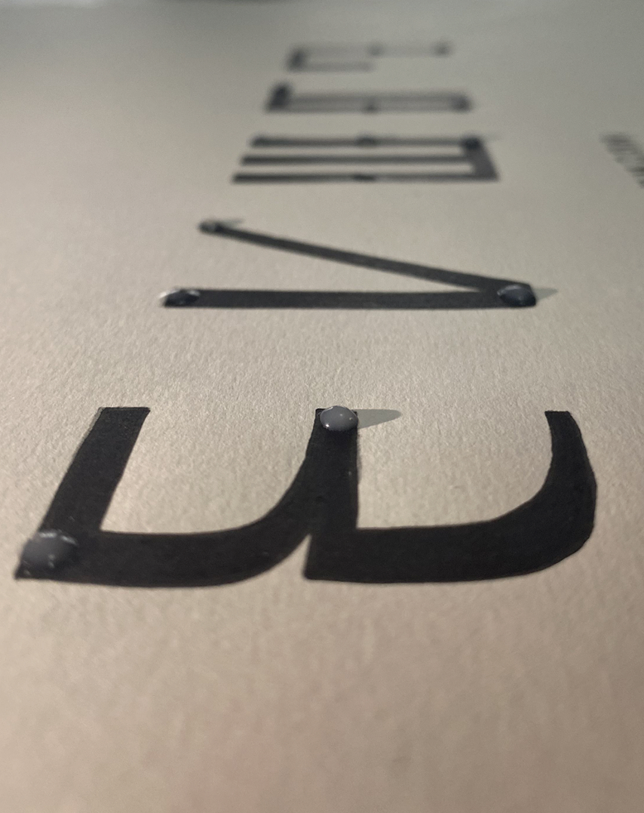
DESPITE ITS WIDESPREAD USE, THERE IS CURRENTLY NO FONT THAT INTEGRATES BRAILLE WITH OTHER SCRIPTS. THIS GAP HIGHLIGHTS THE NEED FOR NEW TYPOGRAPHIC SOLUTIONS THAT CAN BRIDGE DIFFERENT ALPHABETS AND TACTILE READING SYSTEMS, FOSTERING INCLUSIVITY AND COMMUNICATION ACROSS DIVERSE LINGUISTIC AND SENSORY NEEDS.
UNDO INTEGRATES BRAILLE AND VISUAL ALPHABETS ON TWO LEVELS: PHYSICAL, BY BRINGING WRITING SYSTEMS USUALLY KEPT SEPARATE INTO THE SAME TYPOGRAPHIC SPACE, AND HUMAN, BY PROMOTING INCLUSION AND EQUALITY BETWEEN SIGHTED AND BLIND PEOPLE. ADDITIONALLY, THIS COEXISTENCE HAS AN EDUCATIONAL ROLE, SUPPORTING THE LEARNING OF BRAILLE ALSO FOR SIGHTED READERS.
EACH SCRIPT WAS SELECTED TO DEMONSTRATE THE FLEXIBILITY OF THE SYSTEM: STARTING WITH BRAILLE, CONSISTING OF DOTS, THE FONT TAKE SHAPE BASED ON LATIN, THE DOMINANT SCRIPT CHARACTERIZED BY BOTH SINUOUS AND SQUARISH SHAPES; ON GREEK, A SCRIPT WITH ANCIENT HISTORICAL ORIGINS; ON CYRILLIC, WITH ITS COMPLEX, ANGULAR CHARACTERS; AND FINALLY ON AREBICA, THE ARABIC SCRIPT ADAPTED TO PHONETIC SYSTEM OF CROATIAN LANGUAGE, IT WAS USED BY BOSNIANS UP UNTIL THE 20TH CENTURY, TRANSLITERATES CROATIAN, SERBIAN AND BOSNIAN DIRECTLY AND IS CHARACTERIZED BY SINUOUS SHAPES.
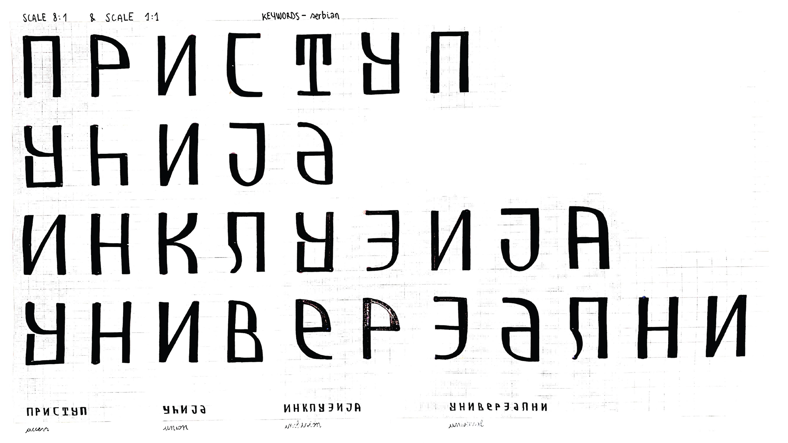THE PROJECT, ENTIRELY HAND-DRAWN, CONSISTS OF A SERIES OF GRID-PAPER BOARDS FEATURING THE FOUR COMPLETE ALPHABETS AT DIFFERENT SCALES, BOARDS DEDICATED TO THE KEY WORDS THAT DEFINE THE UNDO TYPEFACE, AND WHITE BOARDS IN WHICH EACH ALPHABET IS REPRESENTED BY A SINGLE KEY WORD WITH AN ENGLISH SUBTITLE SET IN THE CORRECT BRAILLE PROPORTIONS.
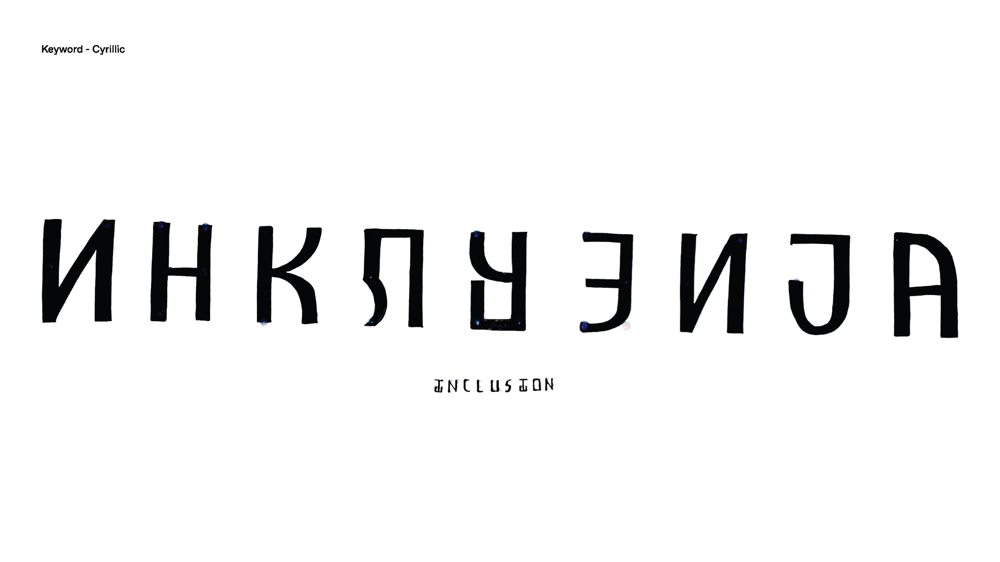 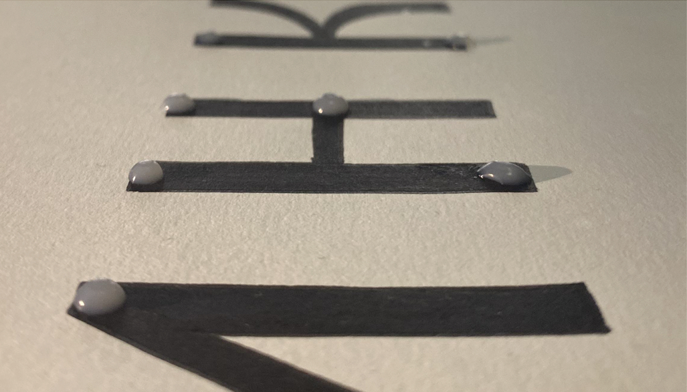 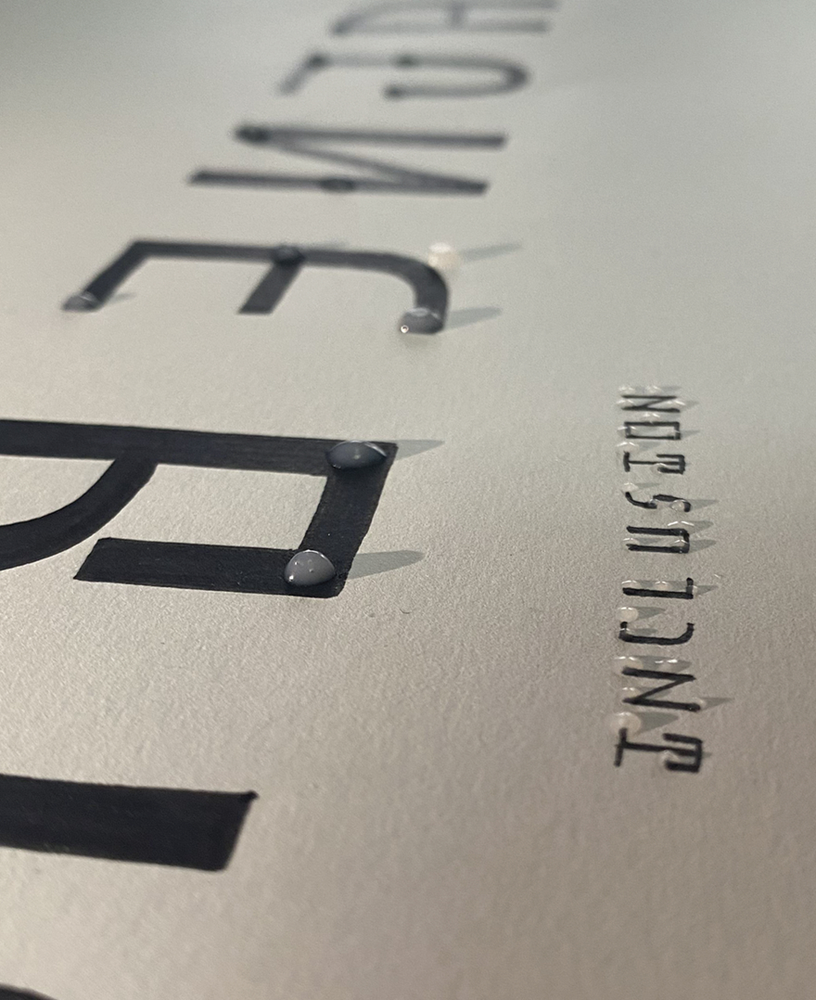 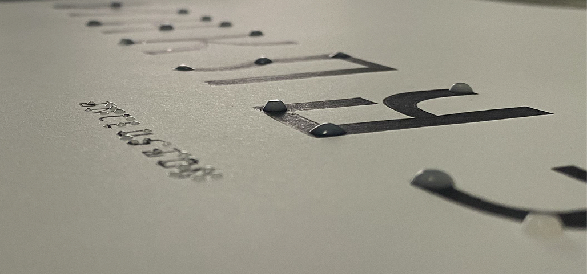 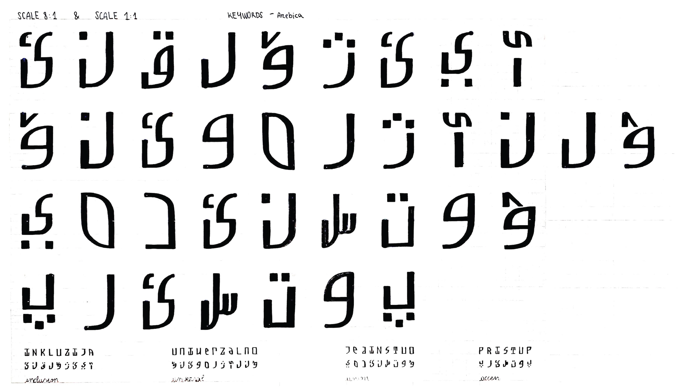 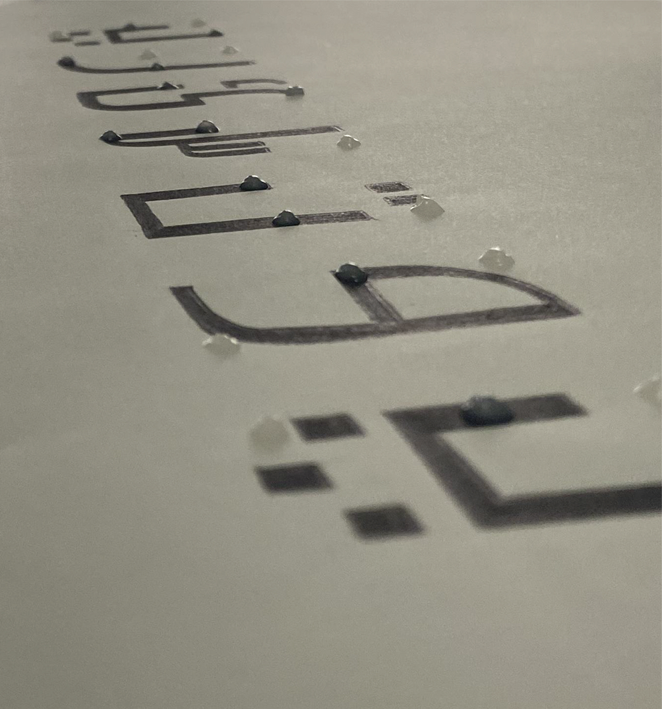 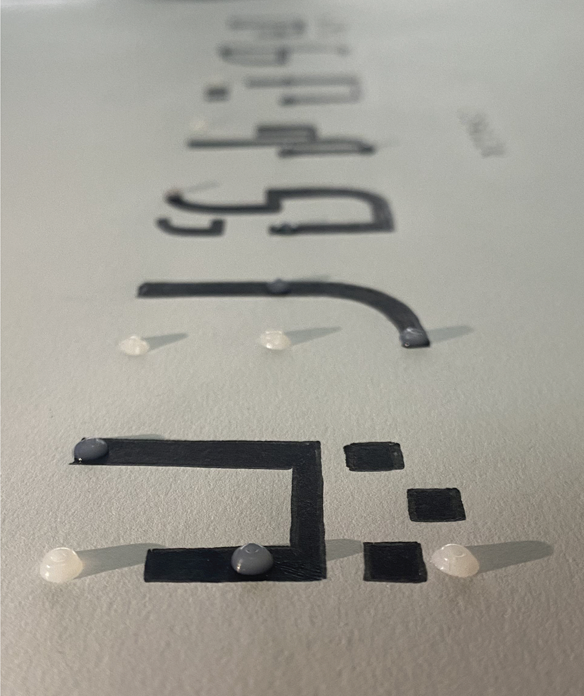 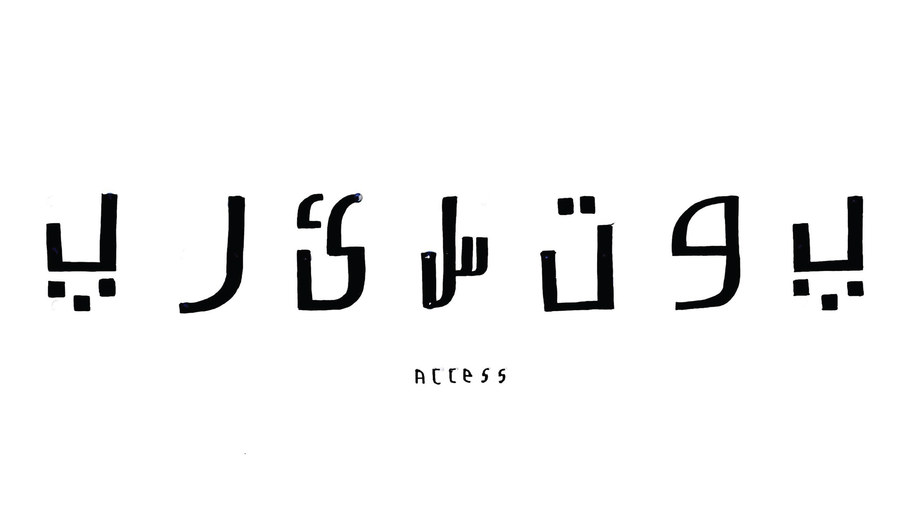 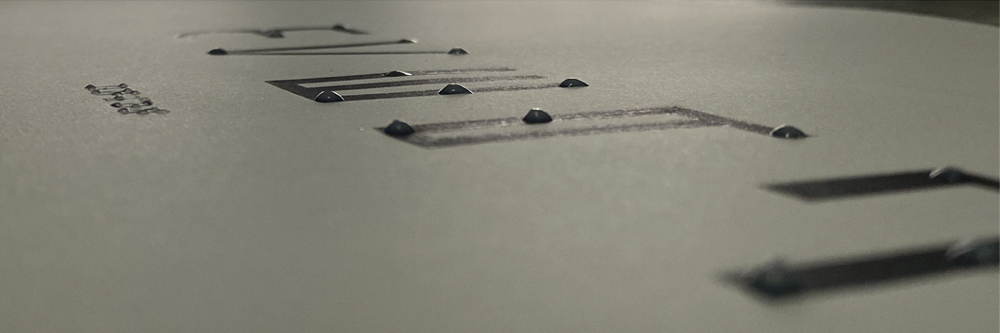 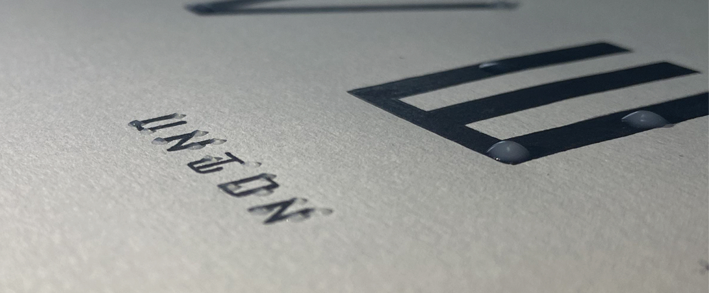 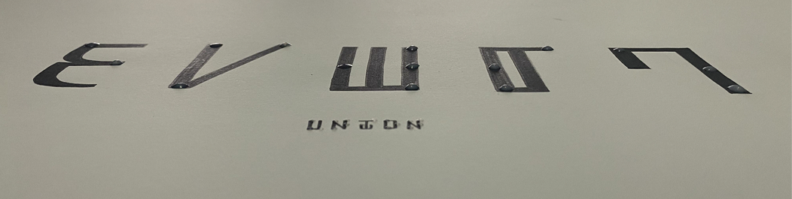©2025 - All Rights Reserved